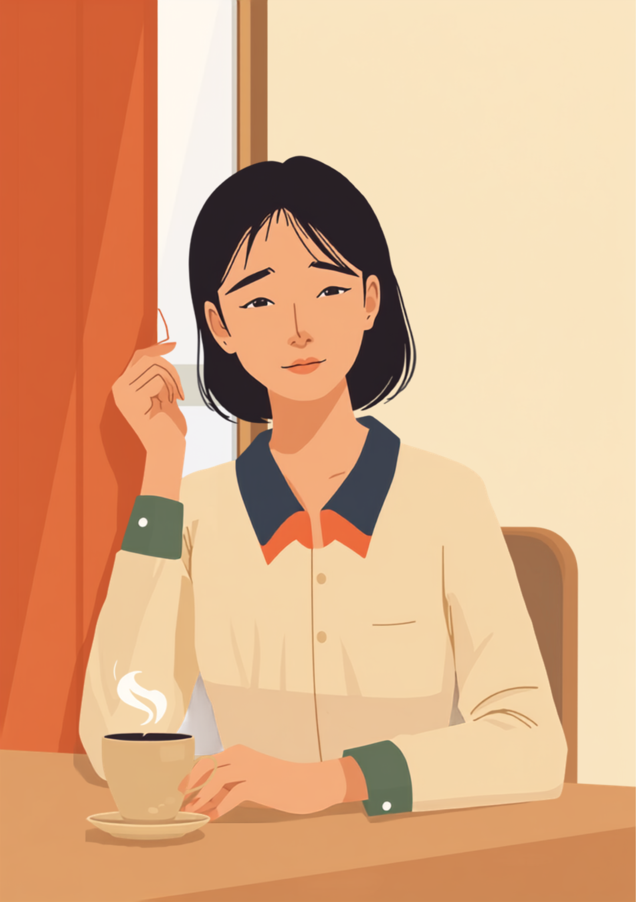
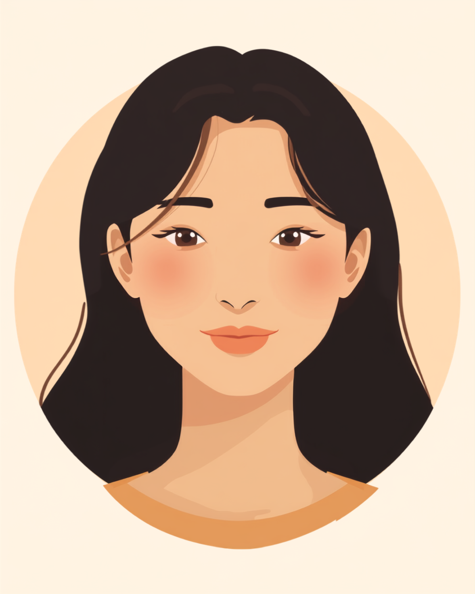

全身性エリテマトーデス（SLE）は、紫外線や過労、ストレスなどをきっかけに症状が揺れ動く病気です。窓際の席や外回りの多い仕事では、日焼け止めを塗り直したり長袖を手放せなかったりする場面が増えますが、それを「気にしすぎ」「おしゃれで塗ってるだけでしょ」と受け取られてしまうこともあるようです。この記事では、SLEがありながら働く方が感じやすい職場との摩擦と、伝え方、使える制度を当事者の声をもとに整理しました（2026年8月時点の情報です）。
PR



窓際の席では、まずブラインドを閉めることから一日が始まる
「また日焼け止め?」と思われるのがつらい、SLEと仕事の摩擦

全身性エリテマトーデス（SLE）は、本来は体を守るはずの免疫が自分自身の体を攻撃してしまうことで、皮膚や関節、腎臓などさまざまな部位に症状が出ることがある病気です。紫外線や疲労、ストレスが症状のきっかけになりやすいとされています。まめざる
就労支援の現場で関わってきた中で、SLEのある方から何度も聞いてきた言葉があります。「休憩のたびに日焼け止めを塗り直していたら、『そんなに気にしなくても』って笑われたことがあるんです」というものです。紫外線対策は、SLEにとって単なる美容や好みの問題ではなく、症状の悪化を防ぐための治療の一部です。それでも見た目からは伝わりにくく、周囲には「日焼けを気にする人」という印象だけが残ってしまうことがあるようです。
本人にとっては、窓際の席に座るだけで肌の負担が気になったり、外回りの予定が入るたびに体調への影響を心配したりする日々でもあります。それでも職場では、いつもと変わらない様子で仕事をこなそうとする方が多いようです。結果として、「特に困っていなさそう」という周囲の印象と、本人が抱えている警戒心との間に、目に見えないずれが生まれやすくなります。
!
SLEの症状の現れ方や紫外線への反応の強さには個人差があります。この記事で挙げる内容がそのまま当てはまるとは限らないため、体調に不安がある場合は自己判断せず主治医に相談することをお勧めします。
「診断されて5年になります。事務職なんですけど、席が窓際で、休憩のたびにトイレで日焼け止めを塗り直してるのを同僚に見られて、『そんなにこまめに塗るなんて美意識高いね』って言われたことがあって。正直言うと、その場では笑ってごまかしたんですけど、家に帰ってからすごくモヤモヤしました。病気のことだって説明すればよかったんでしょうけど、そこまで話すのも大袈裟な気がして、結局まだ誰にも詳しくは言えていません。」
30代・女性（全身性エリテマトーデス・事務職）
相談の一コマ

相談者
窓際の席で、日焼け止めを塗り直すたびに変な顔をされるのがしんどくて。かといって病気の説明をするのも、ちょっと重い気がして言えないんです。
まめざる
紫外線対策が治療の一部だということは、知らない人にとっては想像しにくいことなんです。説明しづらいと感じるのは、あなたの伝え方の問題ではないと思いますよ。
相談者
そう言ってもらえると、少し気が楽になります。でも、どこまで話せばいいのか、正直まだ分からなくて。
まめざる
病名や治療の詳細をすべて話す必要はありません。「窓際の席だと肌に負担がかかるので」など、業務に関わる場面だけに絞って伝える方法を、後の章で一緒に見ていきましょう。
「元気そうに見える日」と「しんどい日」の波、倦怠感と関節痛とどう付き合うか
SLEの症状は一定ではなく、落ち着いている時期と、倦怠感や関節痛が強く出る時期が交互に訪れることがあるとされています。前日まで普通に動けていたのに、朝起きたら体が鉛のように重い、という日もあるようです。それでも外見からは「元気そう」に見えてしまうため、しんどさが伝わりにくいという難しさがあります。
i
倦怠感や関節痛の強まりは、症状が悪化する前触れのサインである場合があるとされています。無理を続けるのではなく、こうしたサインが出たときに休息を取りやすい環境を整えておくことが、長く働き続けるための一つの工夫になるようです。
このように「無理をして乗り切る」のではなく「あらかじめ配慮を取り入れておく」ほうが、結果的に長く働き続けやすいと考えられています。しんどさを我慢して見せないようにするほど、周囲には「大丈夫そうな人」という印象だけが積み重なってしまい、いざ体調を崩したときに理解を得づらくなることもあるようです。
「20代後半で診断されました。営業職で外回りが多かったんですけど、診断されたばかりの頃は病気のことを言い出せなくて、真夏でも長袖と日傘なしで外を回ってました。半年くらいたった頃に一度大きく体調を崩して、2週間くらい入院することになって。そこで初めて上司に病気のことを話したんですが、『もっと早く言ってくれればよかったのに』ってあっさり言われて、なんで一人で抱え込んでたんだろうって、めちゃくちゃ悔しかったです。今は外回りの時間帯を調整してもらえるようになりました。」
20代・男性（全身性エリテマトーデス・営業職）
職場にどう伝える、紫外線対策と休憩を無理なく取り入れるために
SLEでは、過労やストレス、紫外線への曝露によって病状が悪化することがあるとされています。長時間の立ち仕事や重労働、屋外での作業が多い場合には、業務内容を調整してもらえるよう相談する余地があるかもしれません。デスクワークであっても、窓から差し込む紫外線やエアコンの風向きなど、気をつけておきたい点はいくつかあるようです。
具体的な場面に絞って伝えるという考え方
病気の仕組みや治療の詳細をすべて説明しようとすると、かえって伝わりにくくなることがあります。業務に関わる具体的な場面だけに絞って伝える方法が、双方にとって負担が少ないとされています。
- 「窓際の席だと肌への負担が大きいので、可能であれば席を替えていただきたいです」
- 「外回りの予定は、日差しの強い時間帯を避けて調整させてもらえると助かります」
- 「体調の波があるので、しんどさを感じたときは短い休憩を挟ませてください」
- 「声をかけてほしいのは顔色が明らかに悪いときで、普段は気にしなくて大丈夫です」
紫外線対策や休憩は、事前に共有しておくほど周りも動きやすくなるという声をよく聞きます。「毎回説明しながらお願いする」のではなく、「あらかじめ決まった配慮として伝えておく」だけでも、気持ちの負担はだいぶ変わるはずです。まめざる
病名や治療の詳細まで伝える義務はありません。信頼できる上司や人事担当者に、業務に関わる範囲でまず共有し、そこからチーム内に必要な情報だけ広げてもらう、という進め方をとっている方もいるようです。就職活動の段階から紫外線対策の必要性を伝えておくことで、入社後の調整がしやすくなったという声も聞かれます。
使える制度と、一人で抱えないための相談先
身体障害者手帳という選択肢
SLEは、症状の程度や日常生活への影響によっては身体障害者手帳の対象となる場合があります。また、手帳を取得していない場合でも、SLEは障害者総合支援法の対象疾患に定められているため、一定の基準を満たせば障害福祉サービスを利用できることがあるとされています。詳しくは主治医や自治体の障害福祉窓口に確認するのが確実です（2026年8月時点の情報です）。
障害年金という、手帳とは別の制度
症状の程度や検査結果、日常生活・就労への影響によっては、障害年金の対象となるケースがあるとされています。ただし障害年金の等級は身体障害者手帳の等級とは別の基準で判定される仕組みのため、両方の制度を別々に確認しておく必要があります（2026年8月時点の情報です）。金額や要件は個別の状況によって異なるため、年金事務所や社会保険労務士に相談することをお勧めします。
相談できる窓口
- 主治医・リウマチ膠原病内科（体調の記録や、働き方についての意見書の相談）
- ハローワークの難病患者就職サポーター（配置されている一部のハローワークで相談可能）
- 難病相談支援センター（就労に関する個別相談や講座）
- 就労移行支援事業所（体調管理を含めた就労準備や職場との調整）
SLEの症状の現れ方や、必要な配慮の内容には個人差があります。この記事の内容がそのまま当てはまるとは限らないため、実際の判断は主治医・支援者・自治体の窓口とよく相談しながら進めることをお勧めします（2026年8月時点の情報です）。
日焼け止めの塗り直しも、こまめな休憩も、わがままではなく治療の一部です。それを毎回説明しながらお願いするのではなく、あらかじめ決まった配慮として先に共有しておくことは、決して大袈裟なことではありません。
よくある質問
Q. 全身性エリテマトーデス（SLE）があっても正社員として働けますか？
SLEのある方の多くが、専門職や一般事務職などのデスクワークを中心にさまざまな職種で働いているとされています。ただし過労やストレス、紫外線への曝露で症状が悪化することがあるため、勤務時間や業務内容を無理のない範囲に調整できるかどうかが、長く続けるうえでの分かれ目になりやすいようです。
Q. 紫外線対策のために職場でどんな配慮をお願いできますか？
窓際の席を避ける、ブラインドやカーテンで直射日光を遮る、外回りの多い業務を減らしてもらうといった配慮が考えられます。すべてを説明する必要はなく、「窓際の席だと肌に負担がかかるので、可能なら替えてほしい」など業務に関わる具体的な場面に絞って伝える方法が助けになる場合があります。
Q. SLEで身体障害者手帳は取得できますか？
症状の程度や日常生活への影響によっては、身体障害者手帳の対象となる場合があります。また手帳の有無にかかわらず、SLEは障害者総合支援法の対象疾患に定められているため、一定の基準を満たせば障害福祉サービスを利用できることがあります。詳しくは主治医や自治体の障害福祉窓口にご確認ください（2026年8月時点の情報です）。
Q. SLEで障害年金はもらえますか？
症状の程度や検査結果、日常生活・就労への影響によっては障害年金の対象となるケースがあるとされています。ただし等級の判定基準は身体障害者手帳とは異なる仕組みのため、具体的な要件や見込み額は年金事務所や社会保険労務士など専門家に相談することをお勧めします（2026年8月時点の情報です）。
Q. 就職活動の段階でSLEのことを伝えるべきですか？
伝えるかどうかに一律の正解はないとされています。ただし紫外線対策や通院、体調の波への配慮が必要になる場面が多いため、入社前の段階である程度共有しておくことで、入社後の働き方を調整しやすくなったという声もあります。オープンにする範囲やタイミングは、就労支援機関などに相談しながら決めていく方法もあります。
紫外線対策は治療の一部。あらかじめ共有しておくことで働きやすさが変わる
PR


一人で抱え込む前に、今の気持ちを話してみませんか
「まだ迷っている」段階でも大丈夫です。mimemimeの無料相談は、今の状況の整理から一緒に始められます。
無料で話してみる
おのざる
mimemime代表。就労支援の現場経験をもとに、障がいのある方の働く不安に寄り添う記事を執筆。